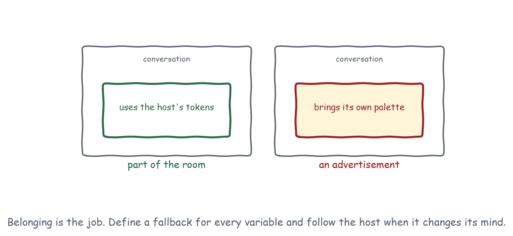
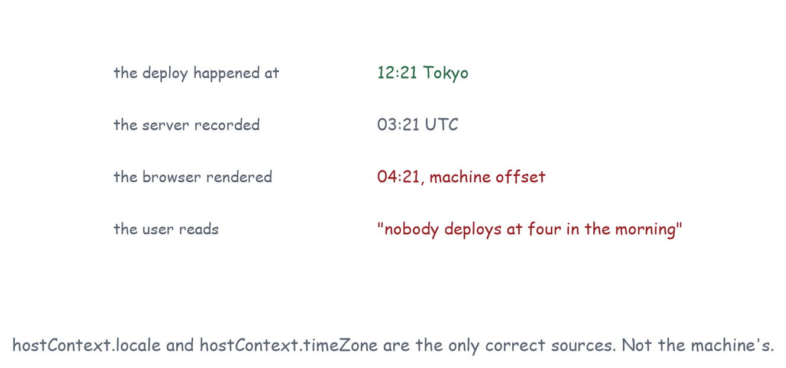

Chapter 12
Host Environment and Theming
A theming contract in three layers, seven environment signals, and the reason your view must define every colour it uses even though the host is going to send them.
The host sends CSS custom properties in hostContext.styles.variables, and you use them with your own fallback defined for every single one. No component library is involved anywhere in this, and that is deliberate: the specification rejected shipping one because no single library works across every host’s aesthetic, and rejected sending spacing tokens because layouts break when spacing varies from what they were designed against.
Seven capabilities describe the environment. All arrive in hostContext, all can change through ui/notifications/host-context-changed, and the most common bug in this group is reading them once at startup.
What does the host actually send?
The theming story is layered, and it helps to see which layer each decision belongs to.
The wire format is CSS custom properties in hostContext.styles.variables, with an optional block of @font-face or @import rules in styles.css.fonts. The specification standardises the names: background, text, border and ring colours in a fixed set of semantic slots, font families and weights, a type scale, border radii, and four shadow levels.
The semantics are roles, not palettes. There is no “blue”. There is --color-background-primary and --color-text-primary, and the pairing is what makes contrast work. A view that uses --color-text-danger on --color-background-danger is legible in every theme; one that uses a red it picked itself on a background the host chose is legible in the theme it was built in.
The adaptation is dark mode, contrast, motion and text scale, and only the first of those is on the wire. Chapter 13 covers the others, which are media queries.
Spacing is deliberately absent from the variable set, and the reason is worth repeating: layouts break when spacing varies from what they were designed against. A host can change your colours safely and cannot change your rhythm safely.
How do I follow the host’s theme?
env.themeCoreLevel 1On the wireTake the host's tokens and follow them when they change.
- Messages
styles--color-background-primarylight-dark- Ground
- The MCP Apps extension defines a message for it.
- Recipes
- Data Explorer, Dashboard, Code and Diff Reviewer
- Demo
- lab-theme
Apply the variables to the document root and define a fallback for every one you use, because a host is permitted to send all of them, some of them, or none. Falling back happens per variable rather than wholesale, which is what makes a partial set more dangerous than an empty one.
The specification warns about partial sets specifically. If a host sends a dark background and no text colour, your light-mode text fallback lands on it and the result is unreadable, which is worse than either theme applied whole. Using role pairs consistently is the defence: take --color-background-danger and --color-text-danger together, so a missing pair fails as a pair.
Extracted from from apps/lib/view.css
:root {
color-scheme: light dark;
--color-background-primary: light-dark(#ffffff, #16181d);
--color-text-primary: light-dark(#15181d, #e7eaee);
--color-text-info: light-dark(#0f5c8c, #63aedc);
--border-radius-md: 8px;
}light-dark() with color-scheme: light dark is the compact way to write a fallback that is already theme-aware, so a view with no host variables at all still respects the operating system. The host’s values, when they arrive, override it.
Removing is as important as setting. When the host stops sending a variable, the view is supposed to fall back to its own value, which it cannot do while last theme’s override is still on the root element. The bridge here tracks what it applied and removes what is no longer sent.
Extracted from from emulator/app-bridge.js
for (const name of appliedVariables) {
if (variables[name] == null) root.style.removeProperty(name);
}
appliedVariables = [];
for (const [name, value] of Object.entries(variables)) {
if (value != null) {
root.style.setProperty(name, value);
appliedVariables.push(name);
}
}Press “Send only half the variables” in the demonstration to see why this matters: with half a dark palette applied over a light fallback, the result is unreadable, and that is exactly the clash the specification warns about. The mitigation on the view side is to use pairs consistently, so that a missing background and a present foreground are both wrong together rather than separately.
Failure modes. No styles at all is the common case and must look deliberate. Partial styles is the dangerous case. A theme that changes while a menu is open is the fiddly case: re-render or re-read on hostcontextchanged rather than caching computed colours in JavaScript.
env.fontsExtendedLevel 2On the wireLoad the host's typeface without loading anything else.
- Messages
fonts--font-sans- Ground
- The MCP Apps extension defines a message for it.
- Recipes
- Settings and Preferences
- Demo
- lab-theme
Fonts arrive as a CSS block to inject, and --font-sans names the family. Inject the block into a <style> element in the head and let the variable do the rest. If the host sends the variable and not the block, or the block fails to load, your fallback stack is what people see, so make it a real stack and not a single exotic name.

Whose clock and whose language?
env.localeCoreLevel 1On the wireFormat numbers, dates, and text for the user's region.
- Messages
locale- Ground
- The MCP Apps extension defines a message for it.
- Recipes
- Data Explorer
- Demo
- lab-theme
env.timezoneCoreLevel 1On the wireRender instants in the timezone the user is actually in.
- Messages
timeZone- Ground
- The MCP Apps extension defines a message for it.
- Recipes
- none yet
- Demo
- lab-theme
hostContext.locale and hostContext.timeZone, always.
Not navigator.language, which is the browser’s. Not the system timezone, which is the machine’s. A host serving a user in Tokyo from a server in Virginia sends ja-JP and Asia/Tokyo; a view that reads the machine renders Virginia’s answer.
A concrete failure. A deployment list showing “Aug 18, 2026, 4:21 AM” because the view formatted a UTC instant with the machine’s offset, while the user is in Tokyo and the deploy happened at lunchtime. Nothing errors. Everybody’s timeline is wrong by nine hours.

Am I on a phone?
env.platformExtendedLevel 2On the wireCoarse platform shape, used sparingly.
- Messages
platformuserAgent- Ground
- The MCP Apps extension defines a message for it.
- Recipes
- none yet
- Demo
- lab-theme
env.inputModeCoreLevel 2On the wireSize targets for the modality actually in use.
- Messages
deviceCapabilitiestouchhover- Ground
- The MCP Apps extension defines a message for it.
- Recipes
- Settings and Preferences
- Demo
- lab-theme
platform is web, desktop or mobile, and userAgent names the host. Both are Extended, both are coarse, and both should be used sparingly. Reach for a media query or a capability check first; branch on the host name only when you are working around a known bug in a specific host, and comment it with the bug.
deviceCapabilities carries touch and hover, and this pair is worth acting on. Touch without hover means every hover-revealed control is unreachable and targets want the 44 by 44 CSS pixels of WCAG’s AAA criterion rather than the 24 by 24 its AA criterion requires. Hover means tooltips work and a compact toolbar is fine. Both can be true on a laptop with a touchscreen, so treat them as independent facts rather than as a device category.
Extracted from from apps/labs/lab-input/index.html
function describeModality(device = {}) {
const parts = [device.touch && "touch", device.hover && "hover"].filter(Boolean);
$("#mode").textContent = `modality: ${parts.join(" + ") || "unstated"}`;
}
bridge.on("hostcontextchanged", (patch) => {
if (patch.deviceCapabilities) describeModality(patch.deviceCapabilities);
});What are safeAreaInsets for?
env.safeAreaCoreLevel 2On the wireKeep content out of regions the host has spoken for.
- Messages
safeAreaInsets- Ground
- The MCP Apps extension defines a message for it.
- Recipes
- none yet
- Demo
- lab-theme
Four numbers in pixels, which you add to your outermost padding. They describe regions of the host’s window that something else already occupies: a notch, a title bar, a home indicator, a floating toolbar.
A native app would read env(safe-area-inset-*). A view inside someone else’s window cannot, because the notch is not on its viewport, so the host sends the numbers instead.
Application behaviour. Turn them into custom properties and add them to your outermost padding. The view stylesheet in this repository does exactly that, which is why pressing “Add a notch” in the demonstration visibly moves the content in from every edge.
Extracted from from apps/lib/view.css
body {
padding-top: calc(12px + var(--safe-top, 0px));
padding-right: calc(12px + var(--safe-right, 0px));
padding-bottom: calc(12px + var(--safe-bottom, 0px));
padding-left: calc(12px + var(--safe-left, 0px));
}The controls most affected are the ones pinned to an edge: a bottom toolbar, a floating action button, a toast stack. Everything in the middle of the view is fine, which is why this bug survives testing on a desktop and appears on the first phone.
The variables, grouped
The standardised set is long and the grouping is what makes it usable. There are four families, and a view that uses one member of a family should use the rest of it rather than mixing in its own values.
Backgrounds and text come in pairs by role: primary, secondary, tertiary, inverse, and the status roles info, success, warning, danger, plus disabled. The pairing is the contrast guarantee. --color-text-danger on --color-background-danger is legible in every theme a host can send; a red you chose on a background the host chose is legible in the theme you tested.
Borders and rings mirror the same roles. The ring set exists because focus indication needs to be distinguishable from a border, and a host with an unusual palette needs to be able to say so.
Typography carries families, four weights, a text scale in four sizes and a heading scale in seven, each with a matching line height. Using the size without its line height is the most common way to end up with cramped text in a host that sends a larger scale than you designed against.
Radii, border width and four shadow levels are the shape vocabulary. These are the ones most likely to be absent, because many hosts do not have opinions about them, so their fallbacks matter more than the colours’.
Spacing is deliberately absent, and the specification says why: layouts break when spacing varies from what they were designed against. Your rhythm is yours.
Failure modes across the group
No styles at all. The common case, and it must look deliberate rather than unstyled. Every view in this book renders correctly with an empty hostContext, which is the test worth running first.
Half the variables. The dangerous case, and the one the specification warns about. Use role pairs consistently so a missing background and a present foreground fail together rather than separately.
A theme that changes mid-interaction. Re-read rather than cache. Anything you computed in JavaScript from a variable is stale the moment ui/notifications/host-context-changed arrives.
A font block that does not load. Your fallback stack is what people see, so make it a real stack. A single exotic family name with no fallback is a view rendered in whatever the browser picks.
Conformance checks
hostContextcarriestheme,localeandtimeZonein the initialize result.- Style variables are applied to the document root and removed when the host stops sending them.
- A theme change arrives as a partial
ui/notifications/host-context-changedand the view re-renders without a reload. - The view renders correctly with no
stylesat all. safeAreaInsetsmoves content away from every edge it names.deviceCapabilities.touchproduces targets of at least 24 by 24 CSS pixels, and 44 by 44 where the design allows it.
What to remember
Read the environment in a function, not in a constant. Define a fallback for every variable you use. Format through the host’s locale and timezone. Those three habits cover almost everything in this chapter, and the demonstration above will break a view that lacks any of them within three button presses.